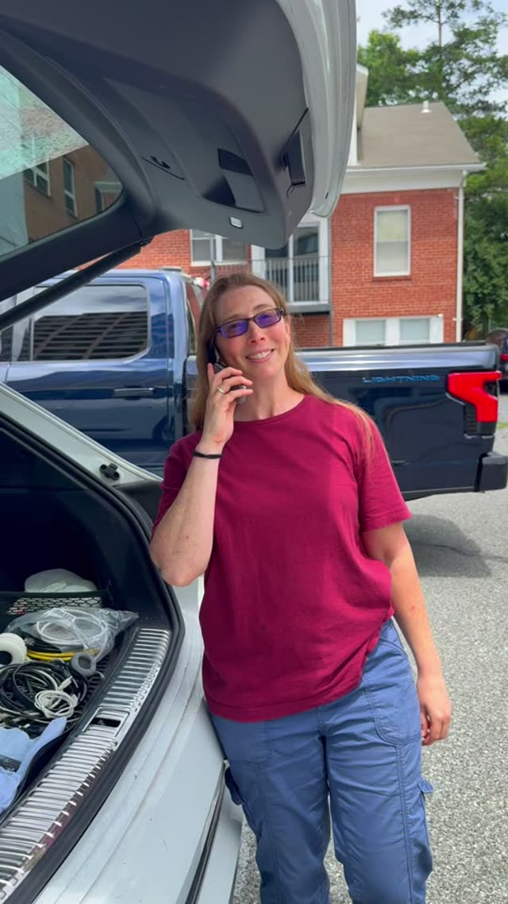

9:16

Loading…
Home & Organizing
Carrie It Away
Decluttering & organizing, one home at a time
Carrie helps clients transform crowded spaces using her own tips and tricks. Her home is also her business headquarters, though, so there wasn’t a tidy studio to film in. We shot it anyway, setting up in a crowded library and, at one point, her car, to catch her in the middle of the real work.